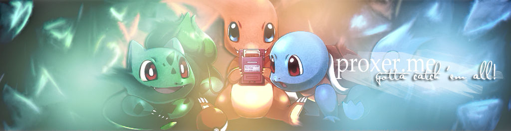

¿Qué sabes de Pokemon?
Todos los juegos de Pokémon tienen un núcleo en común: los Combates. Dominarlos conlleva tener un amplio conocimiento de las estadísticas, movimientos, objetos y habilidades de tus Pokémon.

Aunque la base es la misma, cada juego de la saga tiene su propio Meta-Game. Es decir, no es lo mismo jugar al competitivo del Pokémon X e Y que al del Espada y Escudo. Los sistemas de combate van cambiando a lo largo del tiempo.
¿Quieres Saber más sobre estos 6 pokemon?
Aquí tienes una lista con toda su información.
¡Anuncio Emergente!
No escuches este audio